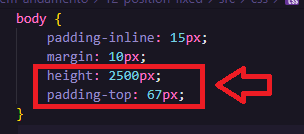
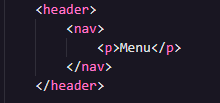
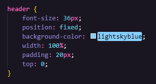
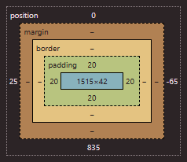

Position Fixed
O 'position: fixed;' serve para deixar um elemento fixo na tela. Assim o usuário sempre verá ele, mesmo que 'scrolle' a tela. Vamos ver:



Quando aplicamos o "position: fixed" o nosso elemento vai para cima da tela e deixa de ocupar o tamanho total da largura, ele ocupa apenas o tamanho do conteúdo, no caso a palavra "menu". O comportamento é parecido com o "position: absolute", tudo que estava abaixo veio para cima e ocupa o espaço do elemento, fazendo ele se destacar em uma camada separada.
Como nosso conteúdo vai para cima e fica destacado, teremos que arrumar isso, podemos colocar um "padding-top:" no nosso body. Para saber o valor que vamos colocar teremos que ver os valores do nosso elemento. Veja que ele tem um "padding: 20px" e para saber o valor a ser colocado no body faremos assim:

Na caixa acima teremos que somar os valores. O retângulo ao meio é a largura(primeiro) x altura(segundo). Queremos a altura + os paddins de cima e baixo, então vamos fazer 42 + 20 + 20 = 82.
Nosso "padding-top:" a ser colocado no body é de 82px.
Para finalizar usamos o "top:0", dessa forma quando o usuário usar o scroll o item com o nome "menu" irá acompanhar a tela para baixo e para cima.